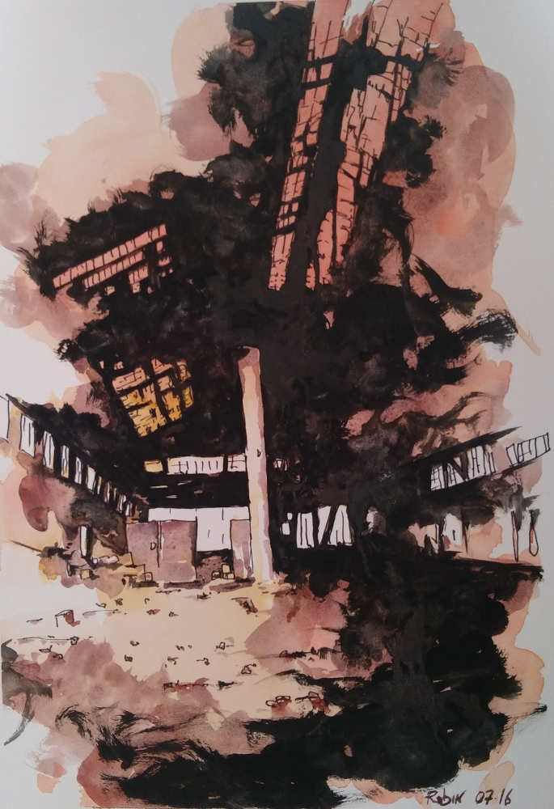
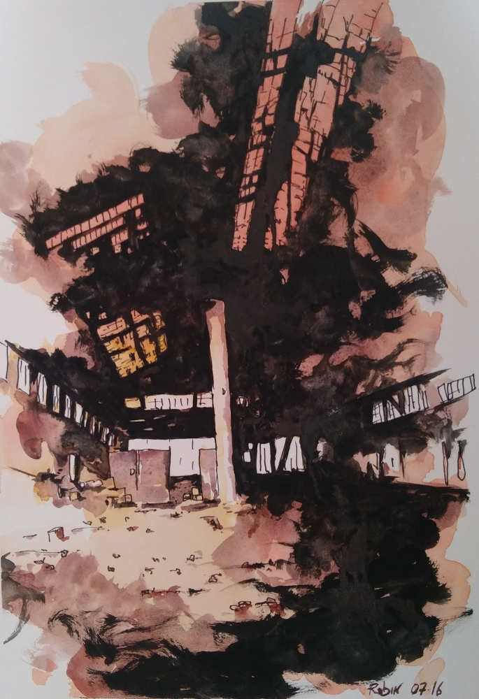

Robin CARAMASCHI
Alès (30100)
06.26.01.58.63
Parcours de vie
Peu après mon entrée en école d'ingénieur, je me suis rendu compte que ce choix de vie ne faisait pas sens pour moi, je me suis alors engagé dans l'associatif et j'ai réalisé une formation liée à ma passion pour la cuisine.
Après quelques années derrières les fourneaux, j'ai saisi l'opportunité de travailler dans le social dans un cadre de travail dont l’éthique m'a profondément séduit.Cela m'a donné envie de devenir éducateur spécialisé. Je me suis assez vite rendu compte que cette éthique qui m'avait séduit n’était que fort peu partagée, voire désapprouvée dans la profession d’éducateur. Avancer dans ce métier en restant porté par l’éthique qui m'animait était un combat permanent.
J'ai donc quitté cette formation avec de nouvelles envies en tête, notamment celle de me former au développement web afin de concrétiser un projet de site internet.
Points Forts
Mon parcours atypique est porté par divers atouts :
- Un état d'esprit curieux.
- Des capacités d'apprentissage autonome ainsi qu'une compréhention rapide
- De la ténacité et de la perseverance dans les
- Un besoin de "sens",dans les projets dans lesquels je m'inscris dans un projet qui soit en corrélation avec mes valeurs humanistes.
- Une capacité à prendre le risque de changer de voie lorsque ce "sens" n'est plus au rendez-vous.
Ce parcours m'a permis de développer :
- Une bonne capacité d'adaptation et d'ouverture d'esprit.
- Un esprit créatif lié à l'intrication de connaissances et compétences issues de champs diversifiés.
- Du plaisir à évoluer dans des cadres souples et collaboratifs permettant d'exprimer cette créativité.
Formation et Compétences
Scientifique - Numérique
- 2016 Apprentissage des notions de bases en PHP, HTML5,
CSS3, JQuery.prise en main des outils liés au developpement web et au graphisme: GIT-HUB, Bluegriffon, Gimp...
Formation à distance sur les sites OpenClassroom et CodeCadémy - 2007-2009 Études en école d’ingénieur.
École des Mines d’Alès (30) - 2006-2007 Classe préparatoire MPSI.
Lycée Camille Julian, Bordeaux (33) - 2006 Baccalauréat Scientifique, mention Assez Bien.
Lycée Jean Monnet, Blanquefort (33)
Cuisine
- 2010 CAP Cuisine mention Très Bien.
Centre de Formation d'Apprentis d’Ales (30)
Langues étrangères
- Anglais
- Lecture/Écriture : bon niveau
- Compréhension/Expression orale : niveau correct
Expérience
Développement Web
- 2016 Début de la conception du site HUB-HUmanBeing. Il est loin d'etre publié, mais vous pouvez vous interesser à son avancement sur le GITHUB du projet.
- 2016 Stage de découverte du métier de développeur web
- SVG informatique- Alès(30).
réalisation de 2 sites grâce au CMS Wordpress puis Agora, Mise à jour de leur site web en vue d'un meilleur référencement, utilisation de PHP et MySQL, découverte de l'installation d'un serveur sous Débian, découverte de la maintenance informatique. - 2015 Création et animation d'un forum Web de philosophie contemporaine (CMS PHPBB).(qui n'existe plus à ce jour)
- 2015 - 2016 Création et animation de 2 sites web pour les LAPE d’Anduze et St. Jean du Gard ainsi que pour les LAPE de Nîmes et Vauvert.
Cuisine
- 2014 Chef Cuisinier - Lycée Louis Pasteur, La Grand Combe(30)
- 2013 Second de cuisine - Le Lyonnais d'Alsace, Alès (30)
- 2012 Pizzaïolo - La Pierre Chaude - Station les Karellis (73)
- 2011 Cuisinier - Le Bogart's - Alès (30)
- 2009 - 2010 Apprenti Cuisinier - Le Riche Hôtel, Alès (30)
Autres Expériences
- Depuis 2016 Membre de l'Observatoire de la Violence Educative Ordinaire (OVEO).
- 2013 - 2014 mise en scene de spectacle : « la porte ouverte à toutes les fenêtres ».
- 2007 -2013 Activités associatives au sein du Réseau Éducation Sans Frontière d'Alès (RESF 30).
Projets
Projet de Formation
Je souhaite développer mes compétences en programmation web :
- Continuer à m'exercer sur PHP afin d'améliorer mon usage de ce language.
- Maîtrise d'un framework PHP (Laravel).
- Apprentissage approfondi de JavaScript.
- Travail collaboratif AGILE avec SCRUM.
- Modélisation UML.
HUB-HUmanBeing
Plate-forme de partage et de projets collaboratifs à modération
horizontale
J'ai le projet de développer une plate forme web permettant la mise en relation des utilisateurs via leurs projets et leurs compétences ainsi que via le partage des ressources dont ils disposent, le tout dans un environnement collaboratif à modération horizontale.
Cette plate-forme à pour ambition d'implanter les pratiques qui fonctionnent déjà dans l'univers "immatériel" du web libre (collaboration, partages, gratuité) dans le monde "matériel".
Pour une vue détaillée du projet, ainsi que de son avancement : HUB-HUmanBeing
Ce projet est une manière pour moi de faire la synthèse entre un engagement humaniste et un vif attrait pour les possibilités offertes par le numérique. Il est actuellement source de frustration dans la mesure ou je ne possède pas encore les compétences nécessaires pour le mener à bien.
Centres d’intérêt
- Programmation
- Histoire
- Bricolage et chantiers collectifs
- Stratégie et Tactique
- Philosophie
- Sciences humaines
Loisirs/Sport
- Jeux vidéo
- Randonnée
- Chasse sous-marine
- Cuisine
- Lecture
Aquarelles
 



Social/Sciences humaines
IFME Nîmes (30)
Université Toulouse Mirail(31)